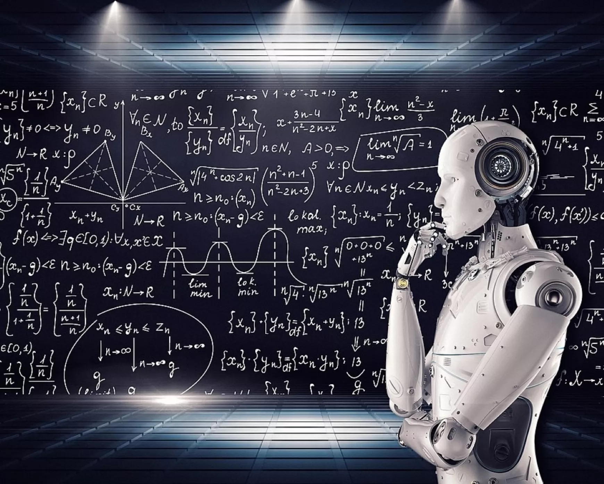

A mesterséges intelligencia (MI) egy gyorsan fejlődő tudományág, amely gépek tanításával és az emberi gondolkodás modellezésével foglalkozik. Az MI képes automatizálni különböző folyamatokat, optimalizálni a döntéshozatalt és növelni az innovációt számos iparágban.
| Technológia | Leírás |
|---|---|
| Neurális hálózatok | Emberi agy működését utánzó modellek |
| Deep Learning | Összetett mintázatok felismerésére képes technika |
| Gépi látás | Digitális képek és videók feldolgozása |
| Reinforcement Learning | Jutalmazáson alapuló tanulási módszer |
A mesterséges intelligencia jelentős hatással van a társadalomra. Segíthet az egészségügyben a betegségek korai felismerésében, javíthatja az oktatást személyre szabott tanulási élményekkel, és átalakíthatja a munkaerőpiacot az automatizáció révén. Ugyanakkor etikai és adatvédelmi kérdéseket is felvet, amelyekre a kutatóknak és döntéshozóknak válaszokat kell találniuk.
További információkért látogass el a Wikipedia MI oldalára.